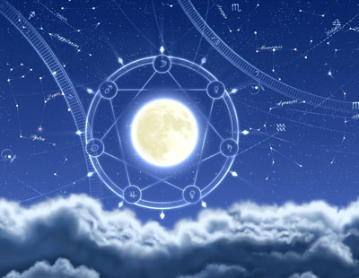

ВЕДИЧЕСКАЯ ПРЕДСКАЗАТЕЛЬНАЯ АСТРОЛОГИЯ

Джотиш – свет чистого знания
Индивидуальные консультации,обучение
Ведический астролог – автор книги по ведической предсказательной астрологии Станиславский С.А.
Составление гармонических карт
ОСНОВНЫЕ КАРТЫ
- Материальное благосостояние
- Вопросы с братьями, сестрами
- Недвижимость, имущество, уровень комфорта и качество жизни за рубежом
- Власть (политика всех рангов)
- Болезни, состояние здоровья
- Дети, внуки
- Судебные процессы
- Брачная жизнь предназначение человека
- Все вопросы работы и карьеры
- Природа и причина смерти
- Раскрывает вопросы с бабушками, дедушками, родителями, наследством
- Транспортные средства
- Отношения с Богом, Духовность, религиозность
- Знания, образование
Существуют и другие, более тонкие гармоники.
- Определение благоприятных и неблагоприятных периодов времени в конкретных областях жизни (бизнес, карьера, романтические отношения, семейная жизнь, здоровье и болезни, материальное положение, споры и т.д.)
- Расчет благоприятного времени для начала нового дела (подписание договора, заключение брака, покупка квартиры или автомобиля и т.п.)
- Определение времени событий через карту рождённого, близких людей
- Коррекция времени рождения по прошедшим событиям.
- Советы (мантры, молитвы, драгоценные или полудрагоценные камни, ношение одежды определенного цвета)